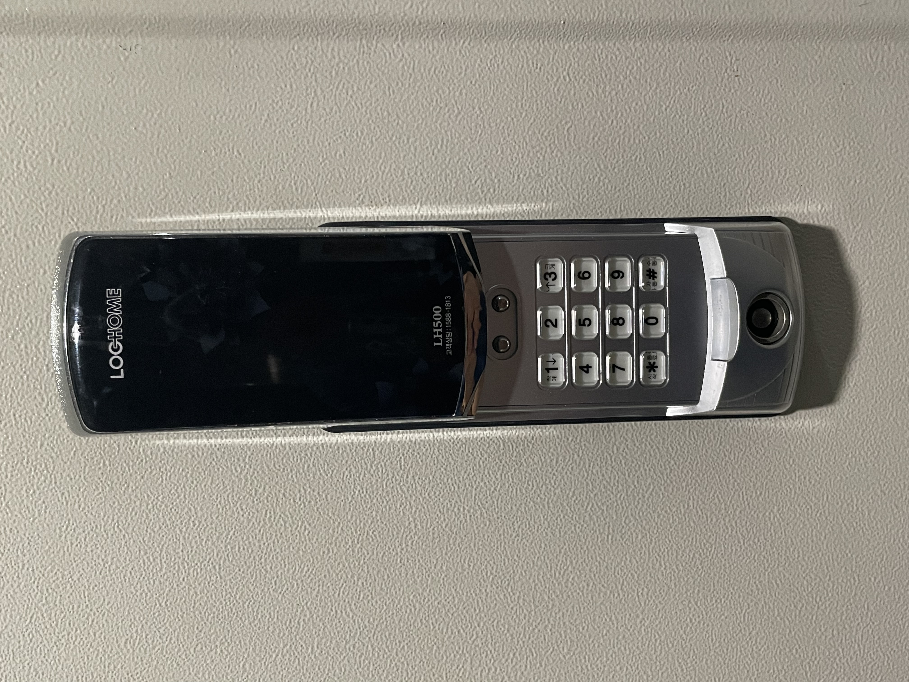

FAQ
01. 다도법 Oriental tea ceremony
02. 싱잉볼 사용법과 가이드 명상 How to Use Singing Bowls and Simple Guide Meditation
03. 도어락 사용법 How to use the door lock.
-
1. 커버를 열어주세요
open the cover -
2. 비밀번호를 입력하고 커버를 내려주세요
Please press the password and put down a cover to unlock the door (The password is shared a day before you enter the room through the Airbnb app message.)
04. 난방패널 사용법 How to use tha heating system
-
1. 전원버튼을 눌러 난방을 켜주세요.

Turn on the heating system by pressing the power button. -
2. B버튼으로 난방&온수 모드를 또는 온수만 가능한 모드로 변경가능합니다.
(여름에는 오른쪽 모드로, 추운 계정에는 왼쪽 모드로 이용하는것이 보편적입니다)
You can change the heating and hot water mode or the only hot water mode with the B button.
(It is common to use the right mode in summer and the left mode in cold accounts.)
06. 프로젝터 사용법 How to Use the Projector
-
1. 2. 빨간불이 들어온 전원버튼을 누른후 15초 가량 기다려 주세요.
(초점 조작부를 통해 초점을 조절할 수 있습니다.)
Press the red lighted power button and wait for about 15 seconds.
(Rotation Switch A can be operated to adjust the focus even while watching.) -
2. 곧. 노이즈 화면이 뜹니다, 프로젝터 리모컨 중앙에 있는 집모양의 버튼을 눌러주세요
Soon. The noise screen will come up. Press the house-shaped button in the middle of the remote control. -
3. 넷플릭스, 웨이브, 티빙, 유투브 등 다양한 OTT서비스를 이용할 수 있습니다.

Various OTT services such as Netflix, Wave, Tving, YouTube, etc. are available. -
4. 만약 프로젝터 전원이 들어오지 않는다면 프로젝터 뒤쪽의 전원슬라이드가 ‘on’인지 확인해주세요
If the projector doesn't turn on, make sure that the power slide behind the projector is "on".
07. 작은 조명 끄기 How to turn off the lights
-
1. 사진에 보이는 스틱을 돌려서 꺼주세요.
turn the black stick in the picture, the light will turn off.
07. 세탁기 사용법 How to use the washing machine
-
1. 세탁기 좌 상단의 세제 투입구를 열어 세제를 투입해 주세요. 세제는 새탁기 좌측 수납함에 있습니다.

Please open the detergent inlet at the top left of the washing machine and inject the detergent. Detergent is in the drawer on the left side of the washing machine. -
2. (선택)2번 투입구에 섬유 유연제를 넣어 주세요
(Option) If you want to use a fabric softener, please put the fabric softener in inlet 2 -
3. 세탁기의 전원을 켜 주세요
Turn on the washing machine. - 4. 모드 선택용 회전스위치응 조작해 세탁모드를 설정해 주세요. (표준세탁 권장)
Please set the laundry mode by operating the rotary switch. (Standard washing recommended) - 5. 동작 버튼을 눌러 세탁을 시작하세요.
Press button 5 to start washing.
08. 전자레인지 사용법 How to use the microwave
-
1.The strength can be adjusted through the rotary switch A. It is arranged in the order of heat insulation, thawing, weak strength, medium strength, and strong strength from the left. We recommend that you set it to the rightmost ‘strong strength’.

- 2. You can set the operating time through the rotary switch B. The unit is minutes.
09. 쓰레기 버리는 방법 How to throw away trash
-
기본적으로 퇴실시 저희가 분리수거를 해드리고 있습니다만, 장기간 머무시면서 쓰레기를 버리고싶으신 경우
1층 대로에 쓰레기를 비우실수 있습니다.
Please separate the normal waste, recyclable waste, and food waste in the plastic bag on the table. We will dispose of the garbage in the bag, after you leave. -
but If you want, you can dispose of the garbage directly on the 1 floor
-
재활용쓰레기와 일반쓰레기를 분리해서 버리시면 됩니다.
Recyclable trash can be collected separately. Please follow the instructions in the picture above for separate collection.